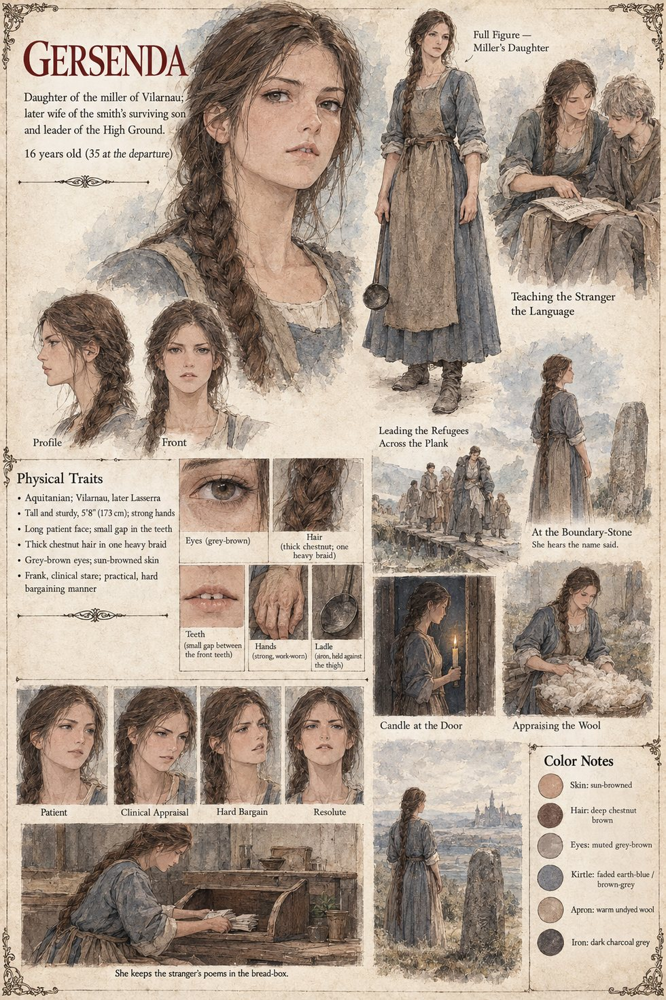

Gersenda
Miller's daughter · later wife of the smith's surviving son and leader of the High Ground · 16 at the story's opening, 35 at the departure
The miller's daughter at the Mill of the Two Weirs, sixteen, with her mother's gap in her front teeth and her late father's long patient face, and the frank clinical interest of a girl who has been told to find something wrong with a person and cannot. She is appointed, by the unspoken vote of the household, to teach the foreigner the language, in the slow flat voice one uses to an elderly, intelligent animal, working through the whole kitchen from the pot to the ladle to the small cracked salt-bowl. She drives a hard bargain at the wool-market, and in return he teaches her his word for stone.
She is the first to hear him in the barn, and she keeps everyone away from it that afternoon. She answers the door to Bertran at night with a candle and an iron ladle held down against her thigh, and on the night of the torches takes the halter, and the others, across the plank into the dark. On the ridge she marries the smith's surviving son and bears five children; she runs the High Ground's affairs with a hard bargain and a long patient face. She keeps a few of the old man's verses, hidden, in a bread-box, and on the day he goes east she hears him say the name at the boundary-stone, as though telling someone where he was going. The morning after, it is she who finds the sheet he has left for her.